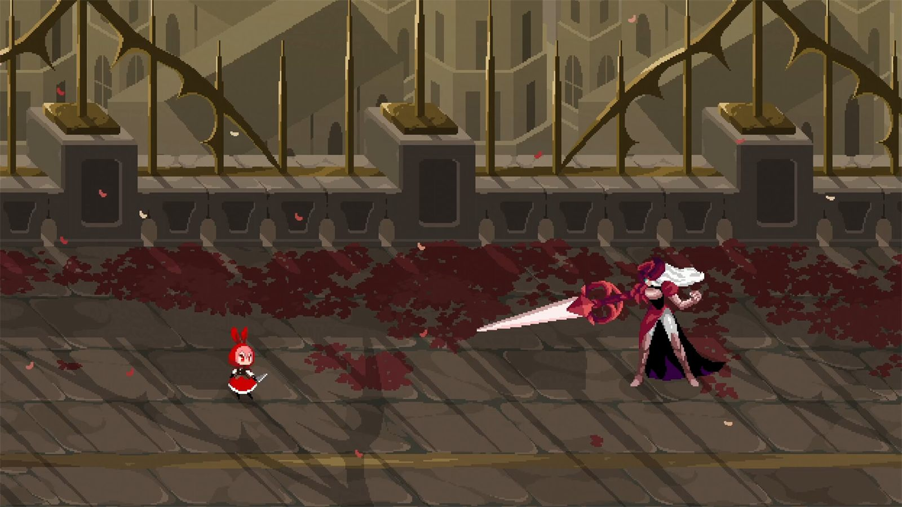
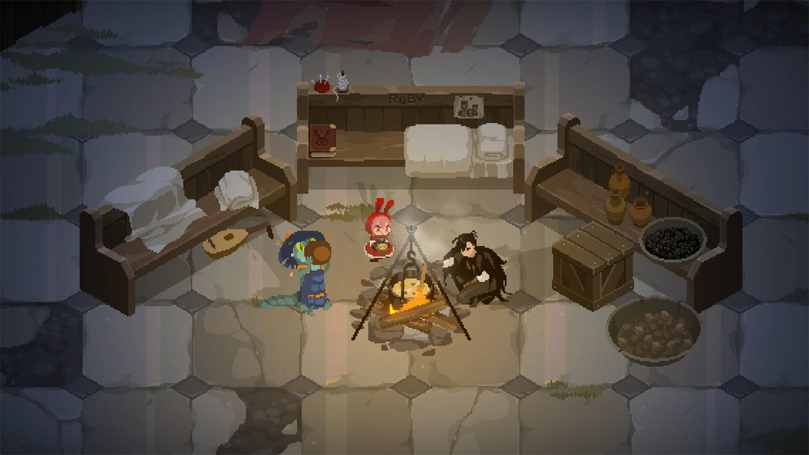
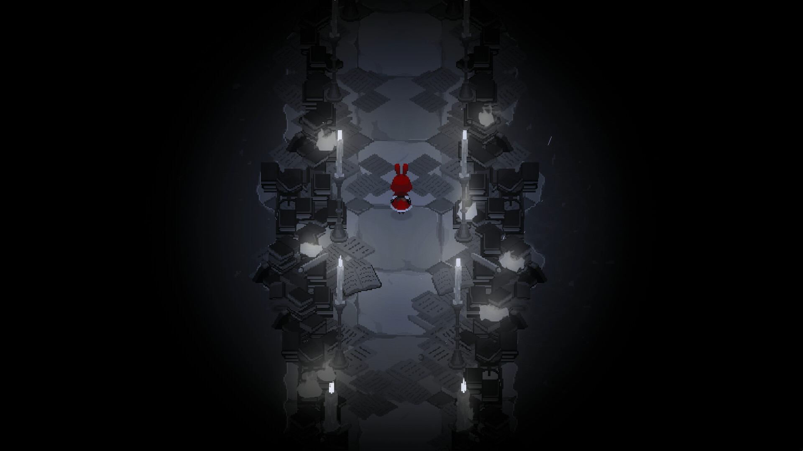

El juego indie que más esperaba de este año es de un estudio taiwanés llamado Cup Dog Games. Desde que jugué la demo quedé completamente enamorado de su jugabilidad y su maravilloso pixel art. Rubinite es un boss rush de lo más singular, con un personaje que recuerda mucho a Caperucita Roja, ambientado en un mundo de fantasía oscura. Le he dedicado 12 horas para conseguir el 100% en tan solo dos días, para que veáis lo mucho que me ha gustado.
La historia sigue a Ruby, la princesa del Reino Escarlata, con la única misión de recuperar sus tierras tras la invasión de la bruja Alcina. Esta malvada bruja arranca los ojos de la gente para forjar cristales de sangre, un objeto mágico con poder de transformar al ser vivo sobre el que se incrusta. Nuestro objetivo será llegar hasta la capital del reino y liberarlo acabando con todo tipo de abominaciones que encontraremos a nuestro paso.
Cómo funciona la mecánica de focus
Lo que más destaco de Rubinite es su increíble gameplay, que gira en torno a una mecánica conocida como focus (concentración). Los ataques básicos de Ruby son débiles por sí mismos, por lo que necesitará concentrarse en el enemigo para encontrar su debilidad e infligir grandes cantidades de daño. ¿En qué consiste? Ruby tiene que quedarse quieta mirando al boss. Conforme lo mira, encima de él se van rellenando una serie de barritas, hasta un máximo de tres. Cuando llenamos al menos una, podemos ejecutar un strike, un tajo rápido que hace una enorme cantidad de daño. Cuantas más barras llenemos, más daño haremos. La mecánica es sencilla, pero la dificultad reside en que los bosses son muy agresivos, y si nos hacen daño, el medidor de concentración se restaura y toca empezar de nuevo.

El combate se complementa con un árbol de habilidades para curarte más con las pociones, aumentar la vida máxima, hacer más daño con los ataques básicos o cambiar las propiedades del strike de Ruby (por ejemplo, que los ataques básicos se potencien durante unos segundos tras el tajo). También podremos desbloquear habilidades para contrarrestar ataques imparables, de forma similar al contraataque Mikiri de Sekiro. Y hay un sistema de talismanes que funciona exactamente igual que en Hollow Knight. Cada talismán contiene una pasiva y para equiparlo hay que tener espacio de muescas suficiente, que se puede ir ampliando.
Los bosses son todos geniales. Cada enfrentamiento es una prueba de fuego. Te va a tocar telegrafiar movesets para superar al jefe. Algunos cuestan más y otros menos, pero vas a tener que aprenderte los pasos de baile de cada nivel si pretendes vencer. Muy contento con los diseños y la puesta en escena de todos. La banda sonora que acompaña es excepcional y los themes de muchos bosses son sublimes, aquí dejo una de mis favoritas, The Guardian.
Duración, dificultad y true ending

El ritmo del juego está bien estructurado. Partimos del monasterio, que sirve como base principal, con una tienda donde comprar pociones o talismanes. Al salir tenemos un mapa con distintos puntos donde enfrentarnos a un boss. Al vencerlo volvemos a la base (ya de noche), se desbloquea una nueva sala que explorar y la narrativa avanza a través de interacciones entre personajes, diálogos o algún descubrimiento. Está guay porque van intercalando jugabilidad e historia para que tengas un poco de todo.
El juego tiene un secreto de cara al final que no me esperaba para nada. Existe además un true ending cuyo requisito es bastante excepcional. Implica dominar de forma absoluta el juego. En condiciones normales no me lo habría hecho ni borracho, pero como me había gustado tanto… no podía decir que no. Juega a su favor que el juego sea cortito y que el camino hacia el final verdadero aporte un cambio de planteamiento, bosses nuevos y un montón de escenas y diálogos adicionales. Merece la pena pese al reto colosal que supone. Si de algo me ha servido Rubinite es para darme cuenta de lo mucho que me gustan los boss rush puros como Titan Souls o Furi, que me pasé hace unos meses.

Si pretendes hacerte el true ending y completar el juego en su totalidad, es uno de los juegos más difíciles que he jugado en mi vida. El true final boss es una locura y lo pongo al nivel de Sans de Undertale, Eigong de Nine Sols o Isshin Ashina de Sekiro. De hecho, tuve que vencerlo dos veces porque tras hacerlo la primera, morí de la forma más tonta posible. En mi vida me había ocurrido algo parecido. Tendríais que haber visto mi reacción, casi reviento la Steam Deck contra el suelo.
Algunas cositas a tener en cuenta. El juego actualmente no tiene textos en español (curiosamente está en portugués), espero que saquen un parche. Y la historia, pese a ser muy interesante, se podría haber escrito mejor. Se pasan de crípticos y al final deciden revelarlo todo de golpe en lugar de construirlo de forma orgánica para que el jugador vaya encajando las piezas poco a poco. Aun así, ha conseguido mantenerme atento en todo momento a la espera de saber qué pasa a continuación.
En conclusión, pedazo de juegarral. Un combate muy original e increíblemente satisfactorio de dominar, un apartado artístico sobresaliente y un trabajo de pixel art y animaciones (especialmente las ejecuciones) extraordinario. Os recomiendo encarecidamente probar la demo de Steam para ver si es vuestro rollo. ¡He quedado encantado!
Lo mejor
- Una mecánica de focus original y extremadamente satisfactoria.
- El pixel art, las animaciones y la dirección artística.
- El diseño de los jefes y una banda sonora excepcional.
Lo peor
- No incluye textos en español.
- La historia resulta demasiado críptica y concentra sus revelaciones al final.
- El final verdadero exige un dominio extremo del combate.
Desglose de puntuación
Veredicto
Un boss rush singular con una mecánica de combate original y satisfactoria, pixel art extraordinario y una banda sonora excepcional. Uno de los grandes indies del año.